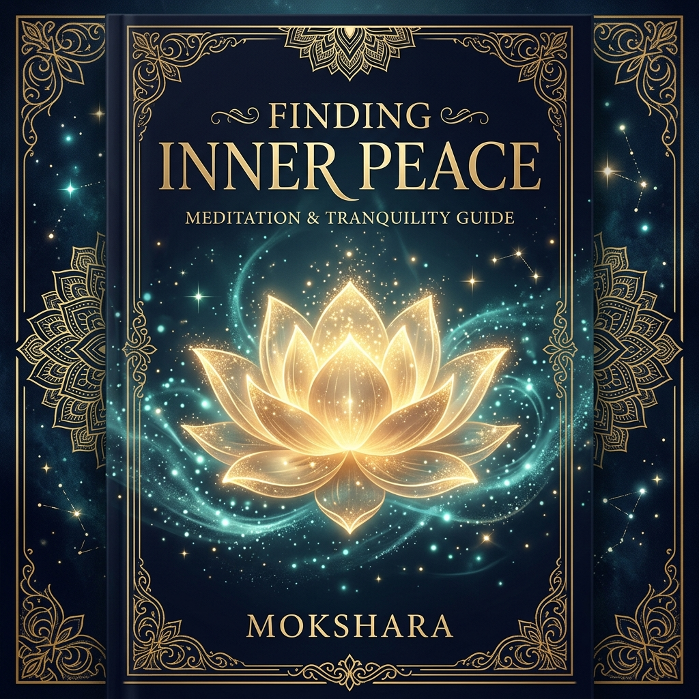
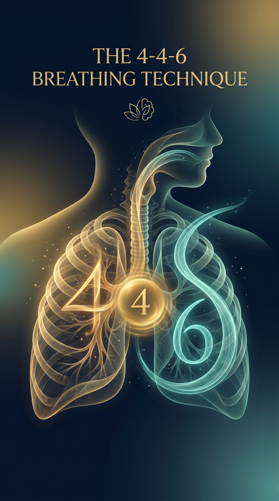
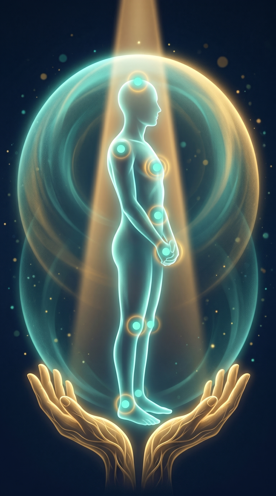

Finding
Inner Peace
"Peace comes from within. Do not seek it without."
Finding Inner Peace
A Mokshara Wellness Publication
© 2026 Mokshara. All rights reserved.
No part of this ebook may be reproduced, distributed, or transmitted
in any form without the prior written permission of the publisher.
This ebook is intended for educational and informational purposes only.
It does not constitute medical or psychological advice.
First Edition — 2026
mokshara.in
Contents

- 01The Stillness Within
- 024-4-6 Diaphragmatic Breathing
- 03The Body Scan Meditation
- 04Observing Thoughts Without Attachment
- 05Creating Your Inner Sanctuary
The Stillness Within
There is a place inside you that the noise of the world cannot reach. It is not a place you travel to — it has always been there, beneath the layers of worry, ambition, and distraction. Inner peace is not the absence of problems. It is the presence of calm amidst them.
Think of a lake during a storm. The surface churns — waves crash, debris swirls, everything appears chaotic. But dive just a few metres below, and you find stillness. The water is clear, quiet, undisturbed. Your mind works the same way. The storms of daily life rage on the surface, but beneath your thoughts lies a layer of consciousness that is always at rest.
The Neuroscience
When you enter a state of deep calm, your brain shifts from high-frequency beta waves (13-30 Hz, associated with stress and overthinking) to alpha waves (8-13 Hz) and theta waves (4-8 Hz). Alpha states are associated with relaxed alertness — the "flow state" — while theta states produce deep meditative calm. Regular meditation practice strengthens your brain's ability to access these states within minutes rather than hours.
What Inner Peace Is — and Isn't
- It is not numbing yourself to emotions — it is feeling them fully without being overwhelmed
- It is not passive resignation — it is active, conscious equanimity
- It is not emptying your mind — it is changing your relationship with your thoughts
- It is a trainable neurological state accessible to anyone
- It is a choice you make moment by moment, not a destination you arrive at
You are the lake, not the storm. The waves will always come and go. Your depth remains untouched.
4‑4‑6 Diaphragmatic Breathing

Your breath is the only autonomic nervous system function you can consciously control. Your heartbeat, digestion, and immune response all operate automatically — but breathing sits at the intersection of conscious and unconscious, giving you a direct dial to your body's stress response.
The 4-4-6 technique is specifically designed to activate the parasympathetic nervous system — your body's built-in calming mechanism. The extended exhale (6 counts versus 4 for inhale) is the key. It stimulates the vagus nerve, which sends a direct "stand down" signal to the amygdala, slowing your heart rate and lowering cortisol within 90 seconds.
The 4-4-6 Breathing Practice
- Prepare: Sit comfortably or lie down. Place one hand on your chest, the other on your belly. Close your eyes gently
- Inhale for 4 counts: Breathe in slowly through your nose. Feel your belly rise (not your chest). Count: 1… 2… 3… 4
- Hold for 4 counts: Pause gently at the top of the breath. No strain. Count: 1… 2… 3… 4
- Exhale for 6 counts: Release slowly through your mouth as if blowing through a straw. Feel your belly fall. Count: 1… 2… 3… 4… 5… 6
- Repeat 6-8 cycles. After 3 cycles, you will already feel a shift. After 6, your nervous system has measurably changed state
The Neuroscience
A 2017 Stanford University study led by Dr. Andrew Huberman identified a cluster of neurons in the brainstem called the "breathing pacemaker." This cluster directly links your respiratory rate to your emotional state. When you deliberately extend your exhale beyond your inhale, these neurons send inhibitory signals to your brain's arousal centres — essentially telling your brain: "The danger has passed."
Every exhale is a small act of letting go. With each breath out, you are practising the art of release — the most essential skill for inner peace.
The Body Scan Meditation

Your body stores emotions. That tightness in your jaw? It is holding unspoken words. The tension across your shoulders? It is carrying responsibilities you have not set down. The body scan meditation is a systematic practice of moving your attention through your entire body, noticing sensations, and gently releasing stored tension — region by region.
Developed by Jon Kabat-Zinn at the University of Massachusetts Medical Centre, the body scan is one of the most researched meditation techniques in clinical psychology. It is used in hospitals worldwide to manage chronic pain, insomnia, and anxiety disorders. It works because it rebuilds the connection between your mind and body — a connection that chronic stress progressively severs.
Guided Body Scan (10 Minutes)
- Lie on your back with arms at your sides, palms up. Close your eyes
- Feet & toes: Bring awareness to the soles of your feet. Notice tingling, warmth, or pressure. Breathe into this area. Release
- Lower legs & knees: Move attention upward. Notice your calves, the weight of your legs against the surface. Soften
- Thighs & hips: Notice any tension in your hip flexors. These muscles hold anxiety. Breathe warmth into them
- Belly & lower back: Feel your abdomen rise and fall. Allow your lower back to melt into the ground
- Chest & upper back: Notice your heartbeat. Feel it as a sign of aliveness, not anxiety. Let your shoulders drop
- Hands, arms & shoulders: Scan from fingertips to shoulders. Unclench your fists. Let your arms become heavy
- Neck, jaw & face: Unclench your jaw. Let your tongue rest loose. Soften your forehead. Release the muscles around your eyes
- Crown of head: Imagine warm golden light entering through the top of your head, flooding your entire body with calm
- Rest in full-body awareness for 2 minutes. Notice the feeling of being completely present in your body
Your body has been faithfully carrying you through every hard day of your life. The body scan is a way of saying "thank you" — and finally letting it rest.
Observing Thoughts Without Attachment
The average human brain generates approximately 6,200 thoughts per day. You cannot stop this flow — and trying to do so creates more stress, not less. The practice of observing your thoughts is not about silencing them. It is about changing your relationship with them.
Imagine you are sitting on a riverbank, watching leaves float by on the water. Each leaf carries a thought — a worry, a plan, a memory, a fantasy. Your only job is to watch them pass. You do not need to grab any leaf, examine it, or follow it downstream. You simply observe: "There goes a thought about work." "There goes a worry about money." And each one floats away.
The Neuroscience
Cognitive defusion — the clinical term for this practice — has been extensively studied in Acceptance and Commitment Therapy (ACT). Research shows that when you label a thought ("I notice I am having the thought that I'm not good enough") rather than being the thought ("I'm not good enough"), activity in the Default Mode Network decreases by up to 40%. This network is responsible for rumination — the endless loop of negative self-talk. Labelling breaks the loop.
The Cloud Labelling Practice
- Sit quietly for 5 minutes with your eyes closed
- As each thought arises, silently label its type: "planning," "worrying," "remembering," "judging," "fantasising"
- After labelling, gently say to yourself: "I notice this thought" — and let it pass like a cloud
- If you get caught up in a thought (you will), simply notice: "I got caught up" — and return to observing. This is not failure. This is the practice
"You are the sky. Everything else — thoughts, emotions, sensations — is just weather."
— Pema ChödrönA thought is not a fact. It is a mental event — as temporary as a cloud, as impermanent as a ripple. You are the vast sky through which all weather passes.
Creating Your Inner Sanctuary
Your inner sanctuary is a mental space — vivid, personal, and entirely yours — that you can visit anytime you need peace. It is not escapism. It is a neurological tool. When you vividly imagine a safe, peaceful place, your brain responds as if you are actually there. Heart rate drops. Breathing slows. Cortisol decreases. The relief is not imaginary — it is physiologically real.
This technique is used in clinical psychology for trauma recovery, performance anxiety, and chronic stress. Athletes visualise winning before competing. Surgeons mentally rehearse procedures. You can use the same neuroscience to create an instant refuge from overwhelm.
Building Your Sanctuary (Guided Visualisation)
- Close your eyes. Take 3 slow 4-4-6 breaths to settle
- Choose your place. It can be real or imagined: a sunlit garden, a moonlit beach, a cosy library, a mountain clearing. Wherever feels safest to you
- Build it with all 5 senses: What do you see? (Colours, light, shapes, textures) What do you hear? (Water, birdsong, crackling fire, gentle music) What do you feel? (Warm sand, cool breeze, soft cushions) What do you smell? (Flowers, rain, incense, fresh tea) What do you taste? (Mint, honey, sea air)
- Add a comfort element: A golden light, a warm blanket, a beloved companion, a protective boundary
- Anchor it: Press your thumb and index finger together while in this space. Over time, this gesture alone will trigger the calm associated with your sanctuary
The Neuroscience
Functional MRI studies show that vividly imagined environments activate the same brain regions as physically experienced ones. The hippocampus, insula, and prefrontal cortex all respond to detailed mental imagery. A 2020 study in NeuroImage demonstrated that participants who practised guided visualisation for 10 minutes daily showed a 31% reduction in perceived stress over 4 weeks.
Within you exists a place that no storm can reach, no noise can disturb, and no fear can enter. You built it with your own imagination — and it will always be there, one breath away.

May Stillness Find You
Peace is not something you find at the end of a journey. It is something you practise along the way — in each breath, each pause, each moment you choose presence over panic.
The techniques in this book are not magic. They are science — proven, ancient, and available to you right now, wherever you are.
Relax. Heal. Rise.